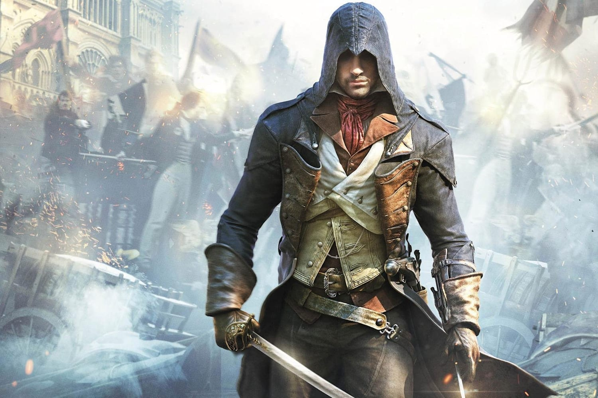

Assassin's Creed es un galardonado videojuego de ficción histórica en tercera persona, de sigilo, acción, aventura y mundo abierto desarrollado por Ubisoft Montreal para Microsoft Windows, PlayStation 3 y Xbox 360. La mayor parte del juego tiene lugar durante la Tercera Cruzada en Tierra Santa y la trama gira en torno a una secta conocida como la Orden Secreta de Hashshashin (Asesinos). El jugador es, en realidad, un hombre de hoy en día llamado Desmond Miles, el cual mediante el uso de una máquina llamada Animus, se permite la visualización y el control de la memoria genética de sus antepasados, en este caso, Altaïr Ibn-La 'Ahad, un miembro de los Asesinos. A través de esta trama, que emergen los detalles de una lucha entre dos grupos, los caballeros templarios y los nizaríes (asesinos), para conseguir un artefacto poderoso conocido como "Fruto del Edén", y tiene lugar principalmente durante la Tercera Cruzada en la Tierra Santa en 1191.

HISTORIA
En 2012, Desmond Miles, un camarero, es secuestrado por Industrias Abstergo. Allí se ve obligado a interactuar con el Animus, un dispositivo que es capaz de reproducir los recuerdos en la memoria genética de los antepasados del usuario. En el caso de Desmond, buscan información sobre su antepasado Altaïr Ibn-La'Ahad, un asesino de la orden Hashsha-shin en la época de la Tercera Cruzada. Dentro del Animus, las memorias de Altaïr revelan que él estaba tratando de impedir a Robert de Sablé tomar un artefacto de un templo, pero rompió los tres principios de la Hermandad de Asesinos en el proceso. El líder de la Hermandad, Al Mualim, degrada a Altaïr al rango de novicio, y le asigna la tarea de asesinar a nueve personas, todos ellos templarios, para recuperar su antiguo estatus.
A medida que Altaïr completa los asesinatos, descubre que cada uno era miembro de los templarios en búsqueda de "Fragmentos del Eden" en la zona, artefactos similares al de que "de Sable" intento robar. Al encontrar a "de Sable" fuertemente custodiado, descubre que era en realidad María, la ayudante de "de Sable", disfrazada con su armadura. Ella exige que termine el asesinato, pero él la perdona. Altaïr se entera de la ubicación de "de Sable", y lo encuentra delante del rey Ricardo y lo acusa de traición con los templarios. El rey Ricardo hace que los dos combatan y deja que Dios decida quién está diciendo la verdad. Altaïr eventualmente mata a "de Sable", quien en su último aliento, revela la existencia de un décimo Templario: Al Mualim. Al regreso a la hermandad, Altaïr encuentra a Al Mualim en posesión de la Manzana del Edén que es capaz de controlar las mentes de las personas. Altaïr se ve obligado a luchar en camino contra personas inocentes y asesinos bajo el control de Al Mualim (con la ayuda de otros asesinos que siguen fieles al credo) para llegar a Al Mualim, y entra en batalla con él. Altaïr finalmente ve a través de los trucos que Al Mualim crea al utilizar el artefacto, y lo mata. Al acercarse al artefacto, Altaïr se sorprende al descubrir que muestra una proyección de la Tierra marcando varios puntos alrededor del globo.
En este punto, Desmond es sacado del Animus, ya que sirvió para su propósito. Él llega al saber que Abstergo es una fachada para los templarios de hoy en día. Abstergo está ahora listo para utilizar las ubicaciones en el mapa visto por Altaïr para encontrar más piezas del Edén, creyendo de que deben recoger los artefactos para controlar la población mundial con el fin de evitar el fin del mundo previsto para 2012. La vida de Desmond es salvada por Lucy Stillman, una miembro de los Asesinos haciéndose pasar como una científica de Abstergo. Una vez solo en su habitación bajo llave, Desmond descubre (a través del "efecto de sangrado" de su tiempo transcurrido en el Animus) que puede observar numerosos mensajes con sangre en las paredes y el suelo dejados por sujeto de prueba anterior (Sujeto 16) los cuales predicen el fin del mundo.
LISTA DE JUEGOS
Ponemos en orden todos los juegos de la saga Assassin's Creed según su ambientación histórica, la cronología de su historia y su fecha de lanzamiento.
Eivor viaja a Inglaterra en busca de un nuevo hogar. Assassin's Creed Valhalla, la producción más reciente de la saga, nos sumerge en una fantasía vikinga llena de intrigas y de guerras intestinas. La historia transcurre durante el siglo IX d.c., lo que significa que han pasado centurias desde los acontecimientos narrados en Origins y Odyssey. Ubisoft Montreal diseña una entrega que sigue la estela de los dos anteriores, de modo que prima la estructura RPG. Con tantos títulos a sus espaldas, cabe preguntarse en qué orden abordar la saga. No hay una respuesta única, así que ofrecemos varias alternativas.
Distinguimos las entrega principales de las secundarias, puesto que a lo largo de los años Ubisoft ha producido títulos para todo tipo de plataformas. En realidad, algunas de historias se amoldan a la cronología oficial, como por ejemplo las de Assassin's Creed III: Liberation o Assassin's Creed: Bloodlines, que no dejan de perfilar más contexto sobre la época o los personajes. Dejamos fuera, eso sí, las distintas expansiones y DLC ligadas a los capítulos principales a fin de no liar la lista todavía más. Empezamos con el orden en función de la fecha de lanzamiento: